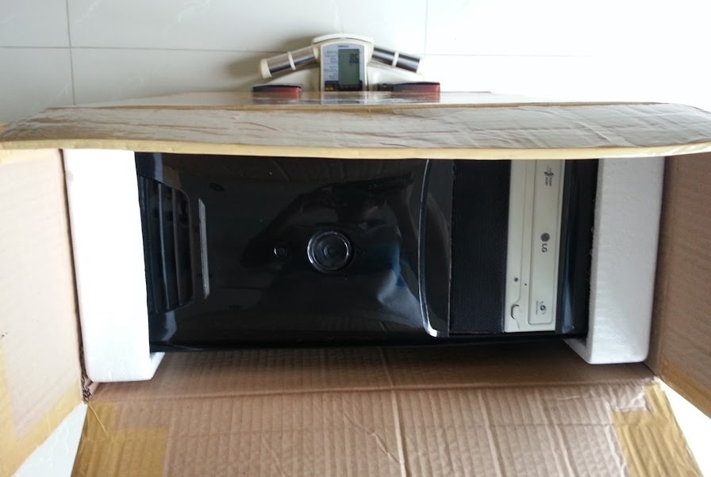

Last modified: Sat Mar 17 2018 17:12:47 GMT+0800 (Malay Peninsula Standard Time)
Interesting Things
I did and discovered a lot of interesting throughout the year. It may be uninteresting to you but interesting to others.
Things I brought on a flight
I flew back and forth quite a few times when I was studying broad in the USA. Throughout the time, I brought a lot of things back and forth from USA to Malaysia, vice versa. Below are a list of interesting things that I brought in my flight. For my own safety, I will not mention which carrier and routes I was flying while carrying those items.
Carry on ATX Desktop
I never own a personal laptop until I came to the USA. I owned quite a few desktop computer before I came to the USA. I decided to bring my desktop that I built a few years back to the USA with me.
Here is a picture of the desktop computer in the box I carried onto the plane.

Interestingly, I was able to carry my desktop that was in a box, through a few different countries' airport security checkpoint without any issue! Well, I bought the cheapest case that I could find at that time; Cheap = Light! However, it was still overweight.
Carry on 1100W Computer Power Supply
I brought a very big, powerful (1100W), and heavy power supply in my carry on baggage one time when I flew back.
The generic picture showed how big it was. I went through the custom in three countries without having any issues too!
Three Laptops on a Trip
I did this two times, each time was carrying three laptops: one personal laptop for myself and two laptops may not belong to me. This was the time when I carried one max out Macbook Air and one Asus Zenbook to my friend back to Malaysia.
I did not get any import taxed by bringing them.
Water Fountain On Board
If you are flying on a long haul flight, water fountain exists on board.
I am unable to comment on how hygiene the water fountain is. However, I did not get any bad stomach from taking my water there.
8x 3.5" HDD and 3x 2.5" HDD
I brought six brand new 10TB 3.5" HDD, two used 2TB 3.5" HDD, and three used 2.5" HDD on one flights. Out of the numbers, two 3.5" HDD and three 2.5" HDD were carry on.
Others
Other thing that I feel it is interesting to share.
AAAA Battery
I will never know AAAA battery exists until I was told to help him to get one in the USA.
The application of the battery is super rare. It is commonly used in stylus pen and presentation clicker. If you are interested in getting an AAAA battery but you could not find one, you can take apart 9V battery and you will find 6 unfinished AAAA batteries in the box.